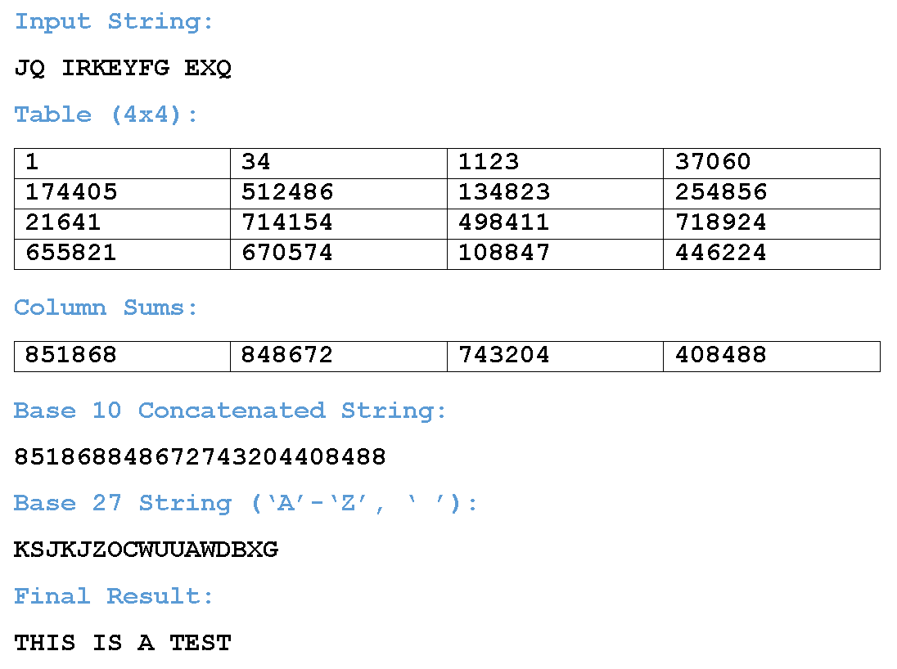

Cheesing Python with GMP
1 November 2026
It is to my surprise that Python online judges supports GMP. Well, that is if it's Pypy to be exact.
What is GMP?
GMP stands for GNU Multiple Precision Aritmetic Library and is a library widely used to handle arbitrary-precision arithmetic on signed integers. This library is used in C++ solutions most of the time because of how it handles big numbers very well (we're talking about numbers beyond 32 and 64 bits like int and long).
How to use GMP?
In C++, you simply include the native wrapper <gmpxx.h>, and then use the mpz_class to define the big number.
#include <iostream>
#include <gmpxx.h>
int main() {
mpz_class a = "123456789012345678901234567890";
mpz_class b("987654321098765432109876543210");
mpz_class sum = a+b;
mpz_class product = a*b;
mpz_class result = (a+5)*67;
std::cout << sum << " " << product << " " << result << "\n";
return 0;
}
In Python, the numbers used the example above can be computed easily without using GMP, but what if we handle an even larger number, say something that has at least $10^5$ digits? This is where it gets cheesy.
Normally, you would import the gmp package, and the rest of the code is very similar to the above C++ code.
import gmp
z = gmp.mpz(29925959575501)
for _ in range(67): z *= z
However, this is not a built-in library in Pypy and therefore you have to pip-install python-gmp first before you use it, which is not applicable in competitive programming. The same thing can be said to the gmpy2 library.
In summary, we have to find another way to use it in online judges if we're using Pypy.
The cheese
The basics
Pypy actually has a shared object library (SO) that handles GMP and we can actually make use of that safely! To begin, we use the ctypes package to read the SO file as a CDLL object.
from ctypes import *
g = CDLL('libgmp.so.10')
init = g.__gmpz_init
init.argtypes = [c_void_p]
init.restype = None
The code above loads the SO named libgmp.so.10. And then we use the __gmpz_init from the shared library as the initializer function. This mirrors the mpz_init function in the original GNU GMP library.
When calling C functions through ctypes, we need to tell Python how the function expects its arguments (argtypes) and what it returns (restype).
Since by default ctypes assumes that the function arguments in C are c_int values, we need to specify the argument types, and possibly the return types too since the default return types are also c_int. Here, the initializer has argtype equal to [c_void_p], which is a list of one element: a representation of a generic pointer (not to be confused with void that resembles NoneType in most function return values). If the function needs more arguments, then just populate the list accordingly:
c_intfor integersintc_uintfor unsigned integersunsigned intc_longfor integerslongc_ulongfor unsigned integersunsigned longc_doublefor doublesdoublec_char_pfor stringschar *c_void_pfor generic pointersvoid *Noneforvoidreturns
The return type restype, just like argtypes, is by default c_int. So, functions with non-integer return values needs the restype value to be specifically declared, or otherwise treated as c_int. In the initializer function init above, I set it to None because the function initializes something and doesn't return anything.
Next up, we can create two other functions from the GNU GMP shared library like such. This should give a clear idea on how to specify other GMP functions in Pypy such as mpz_set_d, mpz_add_ui, mpz_div, and more.
set_str = g.__gmpz_set_str
set_str.argtypes = [c_void_p, c_char_p, c_int]
get_str.restype = None
get_str = g.__gmpz_get_str
get_str.argtypes = [c_char_p, c_int, c_void_p]
get_str.restype = c_char_p
As opposed to their C counterpart's prototype...
int mpz_set_str (mpz_t rop, const char *str, int base);
char* mpz_get_str (char *str, int base, const mpz_t op);
The mpz structure
GMP represents arbitrary-precision integers using the __mpz_struct structure. We need to reproduce its layout in Python so that GMP can operate on the memory allocated by ctypes.
class mpz(Structure):
_fields_ = [
('alloc', c_int),
('size', c_int),
('d', c_void_p)
]
As shown above, there are three fields to be specified:
alloc, the number of allocated limbssize, the number of limbs currently usedd, a pointer to the array of limbs storing the integer's actual value
Here, a limb is like a GMP unit to represent large integers. That's all you need to know about the mpz structure in this write-up :)
Now, to use this mpz structure, we simply initialize by invoking mpz(). If we're following the clean practice, we're supposed to clear the structure using __gmpz_clear, but most of the time we don't need to do this since the code is going to be run once against a test case.
For the sake of this write-up, I also need to introduce to ctypes.byref, which gives ctypes a reference to the memory address of something rather than passing its value. It's really like coding C++ in Python at this point!
So, if let's say we have a c_int with value $42$, we can see the difference between passing by value and passing by address.
a = c_int(42)
print(a.value) # 42
print(byref(a)) # <the address of a>
Or maybe another example when using an mpz structure? How about using the set_str functions defined above? This is the one pattern we're going to do quite often.
a = mpz()
init(byref(a)) # the initializer init from above
set_str(byref(a), b'12345678901234567890', 10) # yes, need to use `bytes` object instead, not `str`
Full example
A full working example would be something like this.
from ctypes import *
class mpz(Structure):
_fields_ = [('alloc', c_int), ('size', c_int), ('d', c_void_p)]
g = CDLL('libgmp.so.10')
init = g.__gmpz_init
init.argtypes = [c_void_p]
init.restype = None
set_str = g.__gmpz_set_str
set_str.argtypes = [c_void_p, c_char_p, c_int]
set_str.restype = c_int
get_str = g.__gmpz_get_str
get_str.argtypes = [c_char_p, c_int, c_void_p]
get_str.restype = c_char_p
add = g.__gmpz_add
add.argtypes = [c_void_p, c_void_p, c_void_p]
add.restype = None
a, b, c = mpz(), mpz(), mpz()
for x in (a, b, c):
init(byref(x))
set_str(byref(a), b'12345678901234567890', 10)
set_str(byref(b), b'98765432109876543210', 10)
add(byref(c), byref(a), byref(b)) # c = a+b
for base in (2, 8, 10, 16, 27): # output c in multiple bases
z = get_str(None, base, byref(c))
print(f'Base {base}: {z.decode()}')
GMP supports bases from 2 to 62, just like Python's
intconversion from strings. For bases up to 36, letters are case-insensitive, but for bases above it, both lowercase and uppercase represent different digit values.
Alien Codebreaking
One good example from Kattis that my friend Jeremy Lim recommended to experiment GMP on is his own favorite problem: Alien Codebreaking.

Problem statement
You are given $1 \le N \le 10^6$, $1 \le X \le 250000$, and a string $S$ of length $N$ containing only uppercase letters and spaces. There are a few steps to follow in order to decrypt the string $S$.
- Step 1: Define a function $f^1(x) = (33x+1) \pmod{2^{20}}, f^n(x) = f(f^{n-1}(x)) \forall n = 2, 3, \cdots$ and so on.
- Step 2: We want to populate a $X$ by $X$ grid by filling the values from left-to-right then top-to-bottom with the values $f^1(0), f^2(0), \cdots, f^{X^2}(0)$ in this specific order.
- Step 3: Obtain the column sums (sum of values in every column) modulo $2^{20}$.
- Step 4: Concatenate the base-$10$ representations of the column sums to get a very long base-$10$ number, e.g.
123450and12367becomes12345012367. Denote this super long number as $A$. - Step 5: Convert $A$ to base $27$, denote the result as $W$.
- Step 6: Start iterating through $S$, and for each letter $s_i$ where $i = 1, 2, \cdots, N$, shift the letter by the $i$-th digit of $W$, and then output the alphabetical version of the shifted value modulo $27$. Here, we assign $A-Z$ to $0-25$ and the SPACE to $26$.
So, using the above picture, we can trace the example as follows:
- With $X = 4$, our concatenated number $A$ is equal to
851868_848672_743204_408488(underscores added for readability). - Converting this to base $27$ gives us the base-$27$ number $W$, which is equal to
KSJKJZOCWUUAWDBXG, or if we represent it as array of integers,[10, 18, 9, 10, 9, 25, 14, 2, 22, 20, 20, 0, 22, 3, 1, 23, 6]. - Read per letter of $S$,
JQ IRKEYFG EXQ, and shift accordingly:Jshifted by 10 becomes $9 + 10 = 19$, which is assigned toT.Qshifted by 10 becomes $16 + 18 = 34 = 7 \pmod{27}$, which is assigned toH.- SPACE shifted by 10 becomes $26 + 9 = 35 = 8 \pmod{27}$, which is assigned to
I. Ishifted by 10 becomes $8 + 10 = 18$, which is assigned toS.Rshifted by 10 becomes $17 + 9 = 26$, which is assigned to SPACE.Kshifted by 10 becomes $10 + 25 = 35 = 8 \pmod{27}$, which is assigned toI.Eshifted by 10 becomes $4 + 14 = 18$, which is assigned toS.Yshifted by 10 becomes $24 + 2 = 26$, which is assigned to SPACE.Fshifted by 10 becomes $5 + 22 = 27 = 0 \pmod{27}$, which is assigned toA.Gshifted by 10 becomes $6 + 20 = 26$, which is assigned to SPACE.- SPACE shifted by 10 becomes $26 + 20 = 46 = 19 \pmod{27}$, which is assigned to
T. Eshifted by 10 becomes $4 + 0 = 4$, which is assigned toE.Xshifted by 10 becomes $23 + 22 = 45 = 18 \pmod{27}$, which is assigned toS.Qshifted by 10 becomes $16 + 3 = 19$, which is assigned toT.
- In the end, output
THIS IS A TEST.
Solution
That's indeed a problem statement, so we're going to do things step-by-step.
- Setting up the $X$-by-$X$ square grid
- Obtain the concatenated column sum $A$
- Converting $A$ to the base-$27$ version $W$
- Using $W$ to run down on $S$
Reading the input
Simple input will do for now. I'll leave the black magic I/O and array optimizations for later.
N, X = map(int, input().split())
S = input()
The square grid
Assuming we start small and ignore the modulo $2^{20}$, we realize that there is a pattern on $f^n(0)$.
$$ \begin{align*} f^1(0) &= 33 \cdot 0 + 1 = 1 \\ f^2(0) &= 33 \cdot 1 + 1 = 33 + 1 \\ f^3(0) &= 33 \cdot (33 + 1) + 1 = 33^2 + 33 + 1 \\ &\cdots \\ f^n(0) &= \sum_{i=0}^{n-1} 33^i = \frac{33^n-1}{32} \end{align*} $$
This means obtaining the column sum of the $i$-th column is equivalent to finding
$$ \begin{align*} f^{i}(0) + f^{i+X}(0) + \cdots + f^{i+(X-1)X}(0) &= \sum_{j=0}^{X-1} \frac{33^{i+X \cdot j}-1}{32} \\ &= \frac{-X + 33^i \sum_{j=0}^{X-1} (33^X)^j}{32} \\ &= \frac{-X + 33^i \cdot \frac{(33^X)^X-1}{33^X-1}}{32} \end{align*} $$
Assuming $C$ stores the column sums. Then by setting $L = \frac{(33^X)^X-1}{33^X-1}$, ideally we should be able to find the value of $C_i = \frac{33^i \cdot L - X}{32} \pmod{2^{20}}$. However, the problem here is that $2^{20}$ is not a prime number, so some numbers are actually not invertible. How do we get over this?
A workaround is to compute $f^1(0), f^2(0), \cdots, f^{2^{20}}(x)$ in one pass and store them in an array $V$, as we can reuse the value of $f^{k-1}(x)$ to compute $f^k(x)$.
To compute $C_1$, we compute $\left( \sum_{j=0}^{X-1} V[j \cdot X \pmod{2^{20}}] \right) \pmod{2^{20}}$, since we have obtained the values of $V[i] = f^{i+1}(x)$.
Next, notice when computing $C_i$ where $i > 1$, notice that the transition from $C_{i-1}$ is as follows.
$$ \begin{align*} C_i &= f^{i}(0) + f^{i+X}(0) + \cdots + f^{i+(X-1)X}(0) \\ &= (33f^{i-1}(0)+1) + (33f^{i-1+X}(0)+1) + \cdots + (33f^{i-1+(X-1)X}(0)+1) \\ &= 33 \left( f^{i-1}(0) + f^{i-1+X}(0) + \cdots + f^{i-1+(X-1)X}(0) \right) + X \\ &= 33C_{i-1}+X \end{align*} $$
This way, we are able to get all the columns modulo $2^{20}$ without having to perform any inverse modulo!
M = 1<<20
# set up f^1(0), f^2(0), ...
V = [1]
for _ in range(1<<20): V.append((V[-1]*33+1)%M)
# set up C_1
C = [0]
for i in range(X): C[0] = (C[0]+V[X*i%M])%M
# populate C_2, ..., C_X
for i in range(X-1): C.append((C[-1]*33+X)%M)
The entire process should run in $O(2^{20})$ time, which is fast enough. A normal brute-force will take $O(X^2)$ time which is too slow since $X^2 < 6.25 \times 10^{10}$>, so the DP transition approach was necessary, or is it?
Click to show further optimization
Denote $t = T \pmod{2^{25}}$ (here, $t$ is bounded by $2^{25}-1$), then we have $T = t + q \cdot 2^{25}$ for some integer $q$. Thus, $$ C_1 = T + \frac{T-X}{32} \pmod{2^{20}} = t + q \cdot 2^{25} + \frac{t + q \cdot 2^{25}-X}{2^5} \pmod{2^{20}} = t + \frac{t -X}{32} \pmod{2^{20}} $$ It suffices to show $32$ divides $t-X$, and I can confidently divide them without using any inverse modulo. But this follows from the fact that $T = \sum_{j=0}^{X-1} 33^{X \cdot j} \equiv \sum_{j=0}^{X-1} 1^{X \cdot j} = X \pmod{32}$ and $T = t + q \cdot 2^{20} \cdot 32 \Rightarrow T \equiv t \pmod{32}$.
With the simplification above, we have removed the array $V$ to store all $2^{20}$ modulos upfront! So now, the next part is to compute $t$ itself. Previously, we did this in $O(X)$ time, let's try to make it run in $O(\log X)$. (but note that the joining of the digits in $C$ to $A$ will still take $O(X)$ time anyways)
Suppose $K = 2^{25}$, we can use the following recursive implementation to compute $t$, which is a geometric series sum.
def f(r, n):
if n == 0: return 0, 1
if n&1: s, p = f(r, n-1); return (s+p)%K, p*r%K
s, p = f(r, n>>1); return s*(1+p)%K, p*p%K
t, _ = f(pow(33, X, K), X)
And there we have it! Some (unnecessary) optimizations for the construction of the column sums, which I won't include in the final code because it's not the main topic of the solution: GMP!
The concatenation
Let's assume GMP is not used first, then concatenating the $X$ modulos can be done as such.
A = int(''.join(map(str, C)))
Since each modulo is at most $1048575$, then $A$ has at most $7X$ digits, which is at most $1.75 \times 10^6$, almost 2 million! To safeguard the execution we need to add this statement at the very beginning.
import sys
sys.set_int_max_str_digits(2*10**6) # at most 1.75M digits in A
This is not necessary for lower Python versions, but since the judges are using at least Python 3.11, we have to add this safeguard.
The base conversion
An intuitive method would be to repeatedly divide by $27$, and then display the values in reverse.
W = [] # W[0] is the last digit, W[-1] is the leading digit
while A:
W.append(A%27)
A //= 27
However, this process is too slow for two reasons:
- As $W$ will contain at most about $\log_{27}{10^{1.75 \times 10^6}} = 1.75 \times 10^6 \times \log_{27}{10} \approx 1.23 \times 10^6$, which is quite much larger than $N < 10^6$.
- Repeatedly dividing large numbers by a small divisor such as $27$ will let Python use a long division on the CPython limbs that represent $A$, so the cost of the division is actually linear to the number of limbs, which when accumulated into the entire conversion process, becomes quadratic, which is bad.
A quicker way is using divide-and-conquer approach, as we will eventually divide the number by a large divisor $27^x$, causing the total number of limbs being processed to be much less: the same for every level, but there are logarithmically many levels. This will teach you two things:
- This question is a good demonstration on how multiplication isn't exactly $O(1)$ time for larger integers.
- $O(n^2)$ vs $O(n \log n)$ approach to the same problem.
As for the divide-and-conquer approach, we can pre-specify the length of $W$ to be the next power of $2$ from however many digits $W$ will actually have.
# D = next power of 2
D = 1
while 27**D < A: D *= 2
# WARNING: precomputing 27**k unfortunately triggers MLE since 27**k can be very big
W = [0]*D # W[0] is the last digit, W[-1] is the leading digit
Q = [(A, 0, D-1)] # process indices [0, D-1]
Z = []
while Q:
x, l, r = Q.pop() # process indices [l, r]
if x < 27:
W[l] = x
else:
k = r-(l+r)//2
p, q = divmod(x, 27**k)
Q.append((q, l, l+k-1)) # process the last k digits at indices [l, l+k-1] using the modulo
Q.append((p, l+k, r)) # process the remaining digits at indices [l+k, r] using the quotient
while W[-1] == 0: # clean up leading digits being 0
W.pop()
The runtime in this algorithm depends on the time complexity of the integer divisions, but clearly it has a "recursion" depth of $O(\log n)$, where $n$ is the number of digits of $W$ (or so approximated to $D$).
The input string rundown
Now that we already have $W$ in reverse order, running through $S$ is a rather simple linear iteration.
for i in S:
t = ord(i)-65
if t < 0: t = 26 # SPACE has ASCII value 32 < 65
t += W.pop(); t %= 27
if t == 26: Z.append(' ')
else: Z.append(chr(t+65))
sys.stdout.write(''.join(Z))
Combining all parts
After all of that long explanation, plus some array optimization, we end up with this Python code.
from array import *
N, X = map(int, input().split()); S = input()
V = array('I', [1]); M = 1<<20
for _ in range(M): V.append((V[-1]*33+1)%M)
C = array('I', [0])
for i in range(X): C[0] += V[X*i%M]; C[0] %= M
for _ in range(X-1): C.append((33*C[-1]+X)%M)
import sys; sys.set_int_max_str_digits(2*10**6)
A = int(''.join(map(str, C)))
D = 1
while 27**D < A: D *= 2
W = array('b', [0]*D); Q = [(A, 0, D-1)]; Z = []
while Q:
x, l, r = Q.pop()
if x < 27: W[l] = x
else: k = r-(l+r)//2; p, q = divmod(x, 27**k); Q.append((q, l, l+k-1)); Q.append((p, l+k, r))
while W[-1] == 0: W.pop()
for i in S:
t = ord(i)-65
if t < 0: t = 26
t += W.pop(); t %= 27
if t == 26: Z.append(' ')
else: Z.append(chr(t+65))
sys.stdout.write(''.join(Z))
SUBMIT THIS SAME CODE AT YOUR OWN RISK OF PLAGIARISM, but this gives you about 3.23s runtime, which is very fast for Python submissions considering the generous 13s time limit. However, we can do much better using GMP!
The GMP in action
So, where does GMP come in handy? The conversion of $A$ to $W$!
Using the GMP tricks we saw above, we can initialize the necessary functions first.
from ctypes import *
class mpz(Structure):
_fields_ = [('alloc', c_int), ('size', c_int), ('d', c_void_p)]
g = CDLL('libgmp.so.10')
init = g.__gmpz_init
init.argtypes = [c_void_p]
init.restype = None
set_str = g.__gmpz_set_str
set_str.argtypes = [c_void_p, c_char_p, c_int]
set_str.restype = c_int
get_str = g.__gmpz_get_str
get_str.argtypes = [c_char_p, c_int, c_void_p]
get_str.restype = c_char_p
Then, using the same column sum array $C$, we initialize $A$ as an mpz structure.
# suppose you have already computed C
A = mpz()
init(byref(A))
set_str(byref(A), ''.join(map(str, C)).encode(), 10)
We still have to convert $C$ from a list of integers, to a long string, but now $A$ is an mpz structure instead of a very long integer.
Converting $A$ to $W$ is simple...
W = get_str(None, 27, byref(A))
... but we still have to handle the final translation nicely! Now, $W$ is represented as an encoded byte-string of length possibly much larger than $N$, so we have to slice only the first $N$ characters, and then translate into numbers to simulate the shifts accordingly.
S = int.from_bytes(S.translate(bytes([c-65 if 65<=c<91 else 26 for c in range(256)])), 'big')
W = int.from_bytes(W[:N].translate(bytes([c-48 if 48<=c<58 else c-87 if 97<=c<114 else 0 for c in range(256)])), 'big')
print((S+W).to_bytes(N, 'big').translate(bytes([32 if v%27==26 else 65+v%27 for v in range(256)])).decode())
For $S$, we can translate the usual $A-Z$ from $0-25$, then $26$ from SPACE. For $W$, it is slightly different because the digits used to represent $0-26$ are different: you start from $0-9$ then $A-Q$. Finally, we can add both $S$ and $W$ and then translate it back to the alphabets $0-25$ to $A-Z$ and $26$ to SPACE. Since the final result is still a byte-string, we have to finish it off with .decode().
Alternatively, we can just stick to the old implementation of going letter per letter, but this is slightly slower from what I've tried.
Z = []
for i, w in zip(S, W):
# translate w accordingly
if w < 58: w -= 48
else: w -= 87
t = ord(i)-65
if t < 0: t = 26
t += w; t %= 27
if t == 26: Z.append(' ')
else: Z.append(chr(t+65))
sys.stdout.write(''.join(Z))
Overall, the combined code should look like this. Again, PLAGIARIZE AT YOUR OWN RISK.
from ctypes import *
class mpz(Structure):
_fields_ = [('alloc', c_int), ('size', c_int), ('d', c_void_p)]
g = CDLL('libgmp.so.10')
init = g.__gmpz_init
init.argtypes = [c_void_p]
init.restype = None
set_str = g.__gmpz_set_str
set_str.argtypes = [c_void_p, c_char_p, c_int]
set_str.restype = c_int
get_str = g.__gmpz_get_str
get_str.argtypes = [c_char_p, c_int, c_void_p]
get_str.restype = c_char_p
N, X = map(int, input().split()); S = input().encode()
from array import *
V = array('I', [1]); M = 1<<20
for _ in range(M): V.append((V[-1]*33+1)%M)
C = array('I', [0])
for i in range(X): C[0] += V[X*i%M]; C[0] %= M
for _ in range(X-1): C.append((33*C[-1]+X)%M)
A = mpz()
init(byref(A))
set_str(byref(A), ''.join(map(str, C)).encode(), 10)
S = int.from_bytes(S.translate(bytes([c-65 if 65<=c<91 else 26 for c in range(256)])), 'big')
W = int.from_bytes(get_str(None, 27, byref(A))[:N].translate(bytes([c-48 if 48<=c<58 else c-87 if 97<=c<114 else 0 for c in range(256)])), 'big')
print((S+W).to_bytes(N, 'big').translate(bytes([32 if v%27==26 else 65+v%27 for v in range(256)])).decode())
A blazing runtime of 0.5s!
Now, what other questions do you think can be heavily optimized with GMP?